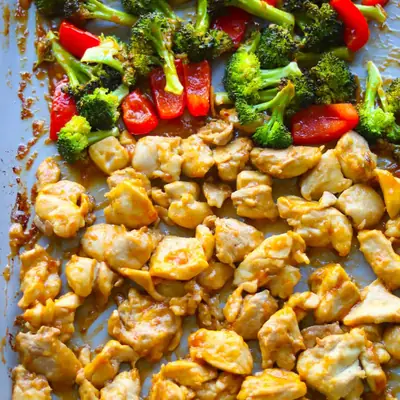

Sheet Pan Orange Chicken

Ingredients
- 1/4 cup low-sodium soy sauce
- 2 tablespoons honey
- 1 tablespoon tomato paste
- 1/2 cup orange juice
- 1 tablespoon orange zest
- 1 tablespoon rice vinegar
- 1 tablespoon sesame oil
- 2 teaspoons minced garlic
- 1 teaspoon grated ginger
- 1 tablespoon cornstarch
- 1 1/2 pounds boneless, skinless chicken thighs (diced)
- 1 tablespoon cornstarch
- 1 teaspoon garlic powder
- 1 tablespoon sesame oil
- 1 head broccoli florets (cut into florets)
- 1 red bell pepper (chopped)
Steps
- Preheat oven to 425°F. Toss chicken with cornstarch, garlic powder, and sesame oil. Spread on one side of a sheet pan. Place broccoli and bell peppers on the other side and drizzle lightly with oil.
- Bake for 10 minutes. Meanwhile, whisk together all sauce ingredients.
- Remove sheet pan from oven and pour sauce over chicken and the veggies. Toss to coat. Return to oven and bake for 8-10 more minutes, until chicken is cooked through and sauce has thickened.
- Serve with rice, quinoa, any grain you prefer.
Recipe by Min Kwon · Kidfriendly Meals, from MJ and Hungryman. Saved here for personal use; the original has the full notes, tips and photos. Open original